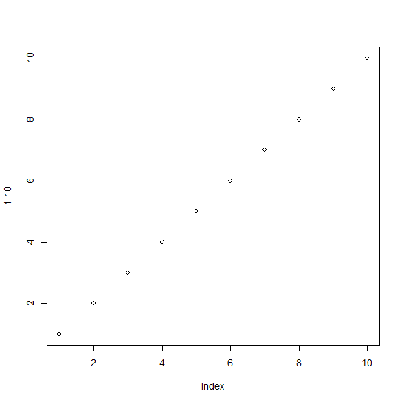

The following schematic outlines the stages resulting a working Dynamic
TOPMODEL for a catchment. It highlights where the dynatopGIS and dynatop
packages fit into this process.
As we will see in the example the dynatopGIS package can help
dynatopThe dynatop package allows simulation and visualisation of Dynamic TOPMODELs as well as
providing some helper for processing time series input data.
Although in this training presumes that model for dynatop are generated
using dynatopGIS this need not be the case so long as the inputs to
dynatop are of the correct format.
The dynatopGIS and dynatop packages implement structured, object orientated, data
flows. The packages are written using the object orientated framework
provided by the R6 package. This means that some aspects of working with the
objects may appear idiosyncratic for some R users. In this training these problems are largely obscured, except for the
call structure. However, before adapting the code, or doing more complex analysis
users should read about R6 class objects (e.g. in the R6 package vignettes
or in the Advanced R book). One particular gotcha is when copying an object. Using
my_new_object <- my_object
creates a pointer, that is altering my_new_object also alters
my_object. To create a new independent copy of my_object use
my_new_object <- my_object$clone()

plot(1:10)